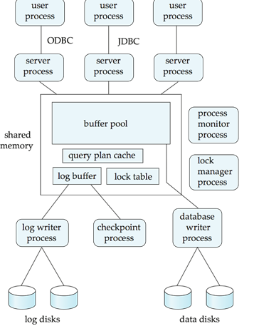

Data Servers Page
Links:
Server process Structure:
Data Servers
n Used in high-speed LANs, in cases where
l The clients are comparable in processing power to the server
l The tasks to be executed are compute intensive.
n Data are shipped to clients where processing is performed, and then shipped results back to the server.
n This architecture requires full back-end functionality at the clients.
n Used in many object-oriented database systems
n Issues:
l Page-Shipping versus Item-Shipping
l Locking
l Data Caching
l Lock Caching
n Page-shipping versus item-shipping
l Smaller unit of shipping more messages
l Worth prefetching related items along with requested item
l Page shipping can be thought of as a form of prefetching
n Locking
l Overhead of requesting and getting locks from server is high due to message delays
l Can grant locks on requested and prefetched items; with page shipping, transaction is granted lock on whole page.
l Locks on a prefetched item can be P{called back} by the server, and returned by client transaction if the prefetched item has not been used.
l Locks on the page can be deescalated to locks on items in the page when there are lock conflicts. Locks on unused items can then be returned to server.
l Page-shipping versus item-shipping
l Smaller unit of shipping more messages
l Worth prefetching related items along with requested item
l Page shipping can be thought of as a form of prefetching
l Locking
l Overhead of requesting and getting locks from server is high due to message delays
l Can grant locks on requested and prefetched items; with page shipping, transaction is granted lock on whole page.
l Locks on a prefetched item can be P{called back} by the server, and returned by client transaction if the prefetched item has not been used.
l Locks on the page can be deescalated to locks on items in the page when there are lock conflicts. Locks on unused items can then be returned to server.
